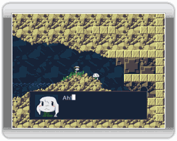

 Schon nach kurzer Zeit wirst du entdecken, dass die Mimigainsel viele einzigartige Bewohner beherbergt. Manche von ihnen sind freundlich, während andere, naja, nicht so nett sind.
Die Mehrheit der Inselbewohner wird dir mit ihrem Rat zur Seite stehen, dir rätselhafte Hinweise mit auf den Weg geben, oder dich sogar um einen Gefallen bitten - üblicherweise bekommst du dafür eine Belohnung. Ein paar neue Gesichter, zwei um genau zu sein, werden alles in ihrer Macht stehende tun, damit du die Ereigisse, die bereits in Gang gesetzt wurden, nicht mehr aufhalten kannst.
Deine neuen Freunde zu schützen wird nicht einfach sein, und du kannst es nicht alleine schaffen. Auf deinem Weg wirst du ein wenig Hilfe nötig haben. Vergiss nicht, mit allen zu sprechen, die dir begegnen. Sie könnten etwas Hilfreiches zu sagen haben, oder dir sogar einen Gegenstand oder eine Waffe schenken. Hier sind ein paar der wichtigeren Charaktere, die dir auf deiner Reise begegnen werden.

Die Hauptfigur. Er erinnert sich nicht an seinen Namen oder woher er gekommen ist. Auf seiner Reise erfährt er mehr über seine Vergangenheit und seinen eigentlichen Einsatzzweck. Wenn du alles richtig machst, wird er vielleicht seine Mimigafreunde retten können.

Er ist die Nummer Eins im Mimigadorf, eine Position, die er von seinem Vorgänger Arthur übernommen hat. Kings Verpflichtung gilt den Mimigas, die im Dorf leben. Er ist nicht der freundlichste Mimiga, den du treffen wirst, aber er verfolgt stets gute Absichten.

Was Toroko an Größe fehlt, macht sie mit Herz und Anmut wieder wett. Während King und Jack zu Anfang noch an deinen guten Absichten zweifeln, heißt dich Toroko gleich freudig auf der Insel willkommen.

Er ist froh, die Nummer Zwei neben King, der Nummer Eins zu sein. Loyal bis zum bitteren Ende beschützt er King unter allen Umständen.

Ihre nahezu unbegrenzten magischen Fähigkeiten machen Misery für einen großen Teil des andauernden Aufruhrs verantwortlich. Aus irgendeinem Grund scheint sie auf der Suche nach jemandem mit dem Namen Sue zu sein.